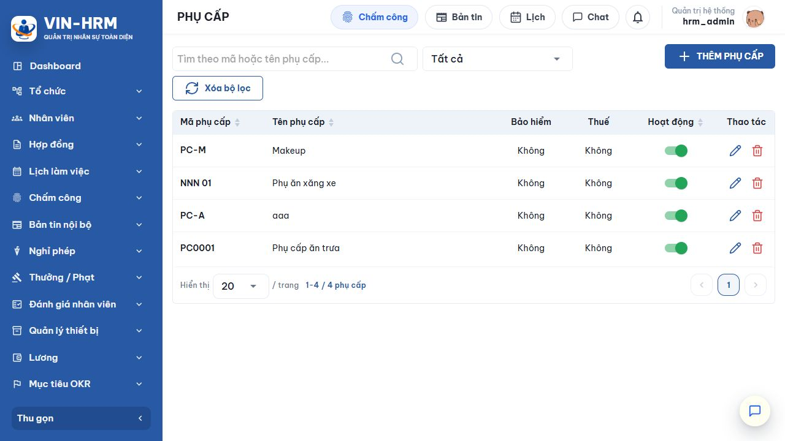
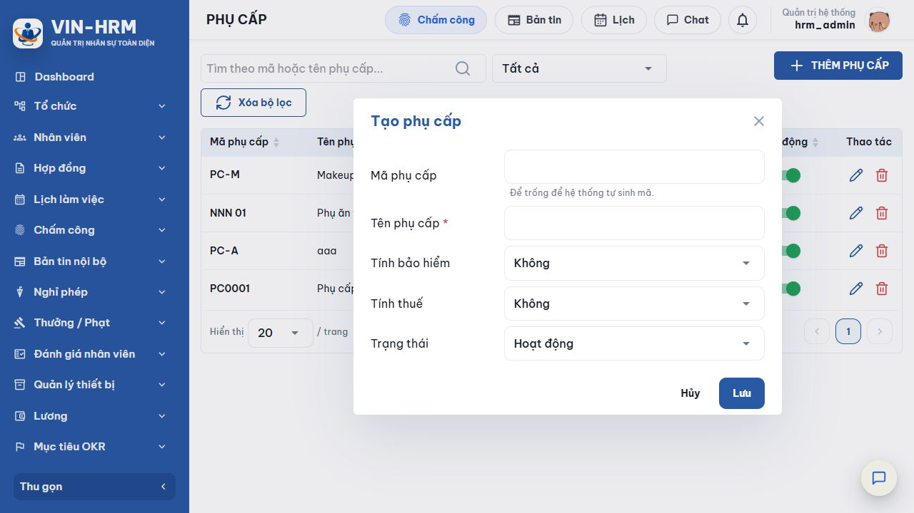

1. Mục đích và phạm vi
Danh mục phụ cấp là nơi khai báo các tên gọi dùng chung như phụ cấp ăn trưa, xăng xe hoặc điện thoại. Mỗi loại phụ cấp có thể được gắn cho nhân viên cùng số tiền và thời gian hiệu lực; hệ thống dùng các cờ thuế, bảo hiểm để xử lý khoản này khi tính lương và lập dữ liệu bảo hiểm.
2. Truy cập chức năng
Đăng nhập VIN-HRM, mở Nhân viên → Danh mục phụ cấp. Nếu không thấy mục này, liên hệ quản trị hệ thống để được cấp quyền quản lý tổ chức.

3. Đọc màn hình danh sách
| Khu vực | Ý nghĩa và cách dùng |
|---|---|
| Ô tìm kiếm | Nhập một phần mã hoặc tên phụ cấp. Có thể xóa nội dung để trở về danh sách đầy đủ. |
| Bộ lọc trạng thái | Tất cả: hiển thị mọi bản ghi; Hoạt động: còn dùng để khai báo nghiệp vụ; Ngừng hoạt động: giữ lại dữ liệu nhưng không nên dùng cho phát sinh mới. |
| Mã/Tên phụ cấp | Định danh và tên đọc hiểu của loại phụ cấp. Có thể bấm tiêu đề cột để sắp xếp. |
| Bảo hiểm | Cho biết khoản phụ cấp có được cộng vào phần thu nhập làm căn cứ bảo hiểm hay không. |
| Thuế | Cho biết khoản phụ cấp có được tính vào thu nhập chịu thuế khi tính lương hay không. |
| Hoạt động | Công tắc bật/tắt nhanh. Nên tắt thay vì xóa khi loại phụ cấp đã từng được sử dụng. |
| Thao tác | Biểu tượng bút chì để sửa; thùng rác để xóa. Hệ thống sẽ yêu cầu xác nhận trước thao tác có rủi ro. |
4. Tạo mới phụ cấp

- Chọn Thêm phụ cấp.
- Nhập tên phụ cấp; nhập mã nếu doanh nghiệp đã có quy ước, hoặc để trống để hệ thống tự sinh.
- Chọn cách xử lý bảo hiểm và thuế theo chính sách đã được phê duyệt.
- Giữ trạng thái Hoạt động nếu muốn sử dụng ngay.
- Chọn Lưu, chờ thông báo thành công rồi kiểm tra lại dòng vừa tạo.
| Trường/Lựa chọn | Bắt buộc | Giải thích |
|---|---|---|
| Mã phụ cấp | Không | Mã được chuẩn hóa chữ in hoa và phải duy nhất trong doanh nghiệp. Để trống, hệ thống sinh mã từ tên và tự tránh trùng. |
| Tên phụ cấp | Có | Tên phải có nội dung và không được trùng với tên đã có trong cùng doanh nghiệp. |
| Tính bảo hiểm – Không | — | Khoản phụ cấp không được đưa vào phần phụ cấp làm căn cứ bảo hiểm. |
| Tính bảo hiểm – Có | — | Khoản phụ cấp còn hiệu lực của nhân viên được cộng vào dữ liệu thu nhập bảo hiểm và dữ liệu kê khai bảo hiểm. |
| Tính thuế – Không | — | Khoản phụ cấp không được đánh dấu là thu nhập chịu thuế trong dữ liệu tính lương. |
| Tính thuế – Có | — | Khoản phụ cấp được đánh dấu là thu nhập chịu thuế trong dữ liệu tính lương. |
| Trạng thái – Hoạt động | — | Cho phép dùng cho phát sinh nghiệp vụ mới. |
| Trạng thái – Ngừng hoạt động | — | Giữ danh mục để tra cứu nhưng loại khỏi luồng sử dụng hiện hành. |
| Cần xác nhận với bộ phận tiền lương Hai lựa chọn “Tính thuế” và “Tính bảo hiểm” có ảnh hưởng trực tiếp đến số liệu. Không thay đổi chỉ dựa vào tên phụ cấp; cần căn cứ quy chế doanh nghiệp và quy định pháp luật đang áp dụng. |
5. Phụ cấp được dùng ở đâu?
Sau khi tạo danh mục, vào hồ sơ nhân viên và khai báo phụ cấp cụ thể gồm loại phụ cấp, số tiền, ngày bắt đầu và ngày kết thúc. Khi chạy lương, hệ thống chỉ lấy bản ghi có thời gian hiệu lực giao với kỳ lương.
- Lương: số tiền phụ cấp được đưa vào dữ liệu tính; cờ thuế quyết định thuộc nhóm chịu thuế.
- Bảo hiểm: loại có cờ bảo hiểm và còn hiệu lực được cộng vào phần phụ cấp làm căn cứ bảo hiểm; cùng cờ này cũng được dùng khi lập dữ liệu kê khai bảo hiểm.
- Hồ sơ nhân viên: cùng một loại phụ cấp không được khai báo hai khoảng thời gian chồng lấn cho một nhân viên.
6. Sửa, đổi trạng thái và xóa
- Chọn biểu tượng bút chì tại dòng cần sửa.
- Kiểm tra mã, tên, hai cờ nghiệp vụ và trạng thái; chọn Lưu. Mã và tên vẫn phải duy nhất.
- Để ngừng dùng mà vẫn giữ lịch sử, tắt công tắc Hoạt động.
- Chỉ dùng thùng rác với bản ghi tạo nhầm và chưa gán cho nhân viên. Với bản ghi đã từng sử dụng, ưu tiên ngừng hoạt động để bảo toàn khả năng đối chiếu.
| Cấu hình liên quan Chức năng này không đọc một khóa riêng tại Hệ thống → Cấu hình. Bản thân các trường Tính thuế, Tính bảo hiểm và Trạng thái chính là cấu hình nghiệp vụ của loại phụ cấp. |
7. Lỗi thường gặp
| Thông báo/Hiện tượng | Nguyên nhân và cách xử lý |
|---|---|
| Tên phụ cấp là bắt buộc | Chưa nhập tên hoặc chỉ nhập khoảng trắng. Nhập tên có ý nghĩa rồi lưu lại. |
| Mã/Tên phụ cấp đã tồn tại | Đã có bản ghi cùng mã hoặc tên. Tìm trong danh sách, sửa bản ghi cũ hoặc dùng định danh khác. |
| Số tiền phụ cấp không hợp lệ khi gán nhân viên | Số tiền phải lớn hơn 0 và không có phần thập phân. |
| Khoảng thời gian phụ cấp bị trùng | Cùng nhân viên và cùng loại phụ cấp đã có khoảng hiệu lực giao nhau. Sửa ngày hoặc cập nhật bản ghi cũ. |
8. Kiểm tra trước khi kết thúc
- Mã và tên đúng quy ước.
- Cờ thuế đã được xác nhận.
- Cờ bảo hiểm đã được xác nhận.
- Trạng thái phù hợp thời điểm áp dụng.
- Đã thử gán cho nhân viên mẫu và kiểm tra kết quả ở kỳ lương thử.